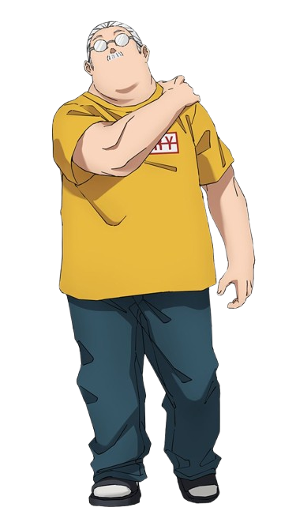
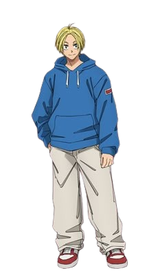
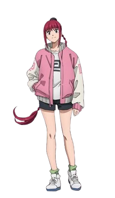
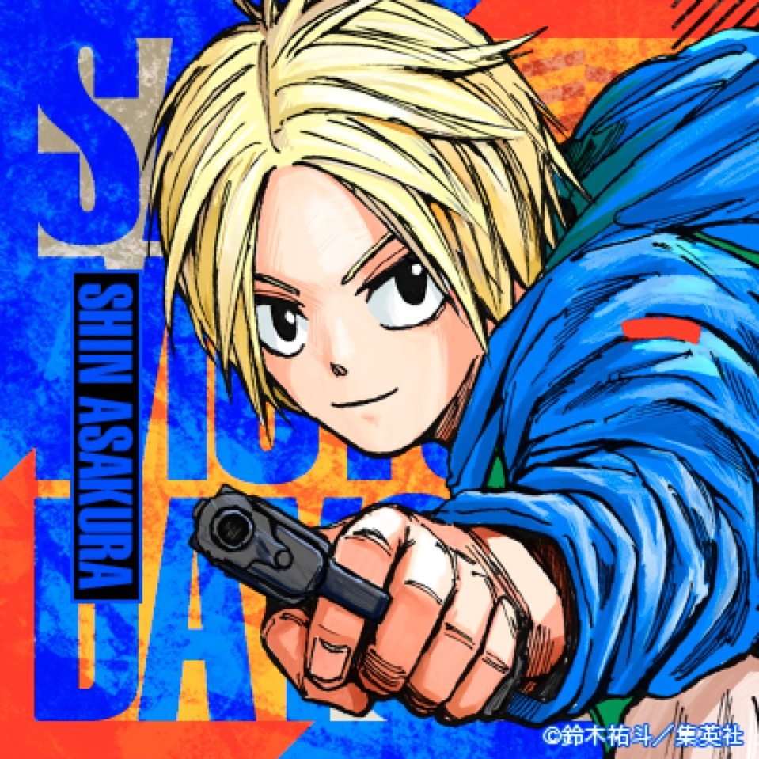
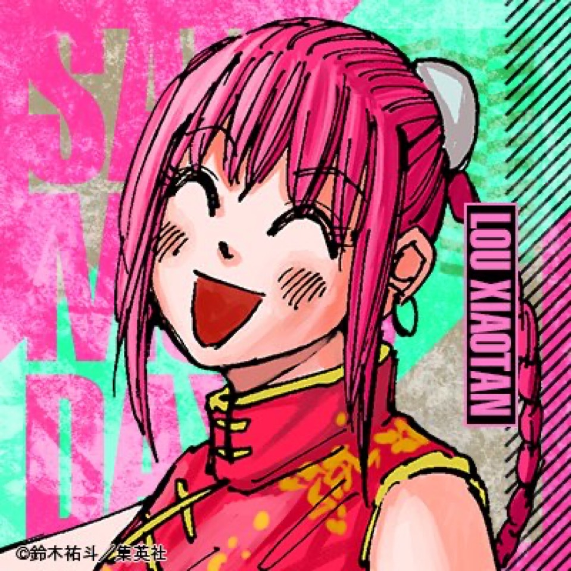

Taro Sakamoto é um ex-assassino lendário que decidiu abandonar a vida do crime para se tornar um pacato dono de mercearia. Apesar de aposentado, ele ainda possui reflexos, força e inteligência acima do normal, o que o torna temido até pelos inimigos mais poderosos. Sua vida tranquila, porém, vive sendo ameaçada por seu passado.

Shin é um jovem com habilidades telepáticas que trabalha ao lado de Sakamoto. Determinado e de personalidade explosiva, ele acredita na justiça e procura sempre proteger aqueles que ama. Com sua mente afiada e sua lealdade, Shin se tornou um dos aliados mais confiáveis de Sakamoto.

Lu é uma lutadora habilidosa com personalidade calma e estratégica. Ela possui grande domínio em artes marciais e é conhecida por sua inteligência tática durante batalhas. Apesar de parecer fria, é extremamente protetora com seus amigos e se tornou essencial para a equipe de Sakamoto.